Spark提供了一个全面、统一的框架用于管理各种有着不同性质（文本数据、图表数据等）的数据集和数据源（批量数据或实时的流数据）的大数据处理的需求。
官方资料介绍Spark可以将Hadoop集群中的应用在内存中的运行速度提升100倍，甚至能够将应用在磁盘上的运行速度提升10倍。
基本概念
Application：用户编写的Spark应用程序。
Driver：Spark中的Driver即运行上述Application的main函数并创建SparkContext，创建SparkContext的目的是为了准备Spark应用程序的运行环境，在Spark中有SparkContext负责与ClusterManager通信，进行资源申请、任务的分配和监控等，当Executor部分运行完毕后，Driver同时负责将SparkContext关闭。
Executor：是运行在工作节点（WorkerNode）的一个进程，负责运行Task。
RDD：弹性分布式数据集，是分布式内存的一个抽象概念，提供了一种高度受限的共享内存模型。
DAG：有向无环图，反映RDD之间的依赖关系。
Stage：是Job的基本调度单位，一个Job会分为多组Task，每组Task被称为Stage，或者也被称为TaskSet，代表一组关联的，相互之间没有Shuffle依赖关系的任务组成的任务集。
RDD（resillient distributed dataset）：弹性分布式数据集。
Task：具体执行任务。Task分为
ShuffleMapTask和ResultTask两种。ShuffleMapTask和ResultTask分别类似于Hadoop中的Map，Reduce。job：用户提交的作业。一个Job可能由一到多个Task组成。一个Job包含多个RDD及作用于相应RDD上的各种操作。
Stage：Job分成的阶段。一个Job可能被划分为一到多个Stage。
Partition：数据分区。即一个RDD的数据可以划分为多少个分区。
NarrowDependency：窄依赖。即子RDD依赖于父RDD中固定的Partition。NarrowDependency分为OneToOneDependency和RangeDependency两种。
ShuffleDependency：shuffle依赖，也称为宽依赖。即子RDD对父RDD中的所有Partition都有依赖。
DAG（Directed Acycle graph）：有向无环图。用于反映各RDD之间的依赖关系。
Cluter Manager：指的是在集群上获取资源的外部服务。目前有三种类型
1) Standalon : spark原生的资源管理，由Master负责资源的分配
2) Apache Mesos:与hadoop MR兼容性良好的一种资源调度框架
3) Hadoop Yarn: 主要是指Yarn中的ResourceManager一个Application由一个Driver和若干个Job构成，一个Job由多个Stage构成，一个Stage由多个没有Shuffle关系的Task组成。
当执行一个Application时，Driver会向集群管理器申请资源，启动Executor，并向Executor发送应用程序代码和文件，然后在Executor上执行Task，运行结束后，执行结果会返回给Driver，或者写到HDFS或者其它数据库中。
使用场景
Spark适用场景：
- Spark是基于内存的迭代计算框架，适用于需要多次操作特定数据集的应用场合。需要反复操作的次数越多，所需读取的数据量越大，受益越大，数据量小但是计算密集度较大的场合，受益就相对较小。
- 数据量不是特别大，但是要求近实时统计分析需求
spark不适用场景：
- 内存hold不住的场景，在内存不足的情况下，Spark会下放到磁盘，会降低应有的性能
- 有高实时性要求的流式计算业务，例如实时性要求毫秒级
- 由于RDD设计上的只读特点，所以Spark对于待分析数据频繁变动的情景很难做（并不是不可以），比如数据集在频繁变化（不停增删改），而且又需要结果具有很强的一致性（不一致时间窗口很小），那么就不合适了。
- 流线长或文件流量非常大的数据集不适合。你会发现你的内存不够用，集群压力大时一旦一个task失败会导致他前面一条线所有的前置任务全部重跑，然后恶性循环会导致更多的task失败，整个sparkapp效率极低。就不如MapReduce啦！
- 由于RDD的特性，Spark不适用那种异步细粒度更新状态的应用，例如web服务的存储或者是增量的web爬虫和索引。就是对于那种增量修改的应用模型不适合。
架构及生态
Apache Spark是一个正在快速成长的开源集群计算系统。Apache Spark生态系统中的包和框架日益丰富，使得Spark能够进行高级数据分析。Apache Spark的快速成功得益于它的强大功能和易于使用性。相比于传统的MapReduce大数据分析，Spark效率更高、运行时速度更快。Apache Spark 提供了内存中的分布式计算能力，具有Java、 Scala、Python、R四种编程语言的API编程接口。Spark生态系统如下图所示：

Spark Core：包含Spark的基本功能，包含任务调度，内存管理，容错机制等，内部定义了RDDs(弹性分布式数据集)，提供了很多APIs来创建和操作这些RDDs。为其他组件提供底层的服务。其他Spark的库都是构建在RDD和Spark Core之上的
Spark SQL：Spark处理结构化数据的库，就像Hive SQL,Mysql一样，企业中用来做报表统计。提供通过Apache Hive的SQL变体Hive查询语言（HiveQL）与Spark进行交互的API。每个数据库表被当做一个RDD，Spark SQL查询被转换为Spark操作。
Spark Streaming：对实时数据流进行处理和控制。Spark Streaming允许程序能够像普通RDD一样处理实时数据。实时数据流处理组件，类似Storm。Spark Streaming提供了API来操作实时流数据。企业中用来从Kafka接收数据做实时统计。
MLlib：一个常用机器学习算法库，算法被实现为对RDD的Spark操作。这个库包含可扩展的学习算法，比如分类、回归等需要对大量数据集进行迭代的操作。
GraphX：控制图、并行图操作和计算的一组算法和工具的集合。GraphX扩展了RDD API，包含控制图、创建子图、访问路径上所有顶点的操作
Spark架构的组成图如下：
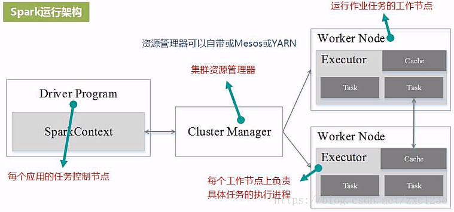
Cluster Manager：在standalone模式中即为Master主节点，控制整个集群，监控worker。在YARN模式中为资源管理器
Worker节点：从节点，负责控制计算节点，启动Executor或者Driver。
Driver： 运行Application 的main()函数
Executor：执行器，是为某个Application运行在worker node上的一个进程
与Hadoop比较
Hadoop MapReduce缺点：
- 表达能力有限
- 磁盘IO开销大，任务之间的衔接涉及IO开销
- 延迟高，Map任务要全部结束，reduce任务才能开始。
Spark借鉴Hadoop MapReduce优点的同时，解决了MapReuce所面临的问题，有如下优点：
- Spark的计算模式也属于MapReduce，但不局限于Map和Reduce操作，还提供多种数据集操作类型，编程模型比Hadoop MapReduce更灵活。
- Spark提供了内存计算，可将中间结果放到内存中，对于迭代运算效率更高
- Spark基于DAG的任务调度执行机制，要优于Hadoop MapReduce的迭代执行机制。
- Spark 的Executor利用多线程来执行具体的任务减少任务的启动开销；
- Executor中有一个BlockManager存储模块，会将内存和磁盘共同作为存储设备，有效减少IO开销；
Spark编程模型
Spark 应用程序从编写到提交、执行、输出的整个过程如图所示，图中描述的步骤如下：
1) 用户使用SparkContext提供的API（常用的有textFile、sequenceFile、runJob、stop等）编写Driver application程序。此外SQLContext、HiveContext及StreamingContext对SparkContext进行封装，并提供了SQL、Hive及流式计算相关的API。
2) 使用SparkContext提交的用户应用程序，首先会使用BlockManager和BroadcastManager将任务的Hadoop配置进行广播。然后由DAGScheduler将任务转换为RDD并组织成DAG，DAG还将被划分为不同的Stage。最后由TaskScheduler借助ActorSystem将任务提交给集群管理器（Cluster Manager）。
3) 集群管理器（ClusterManager）给任务分配资源，即将具体任务分配到Worker上，Worker创建Executor来处理任务的运行。Standalone、YARN、Mesos、EC2等都可以作为Spark的集群管理器。
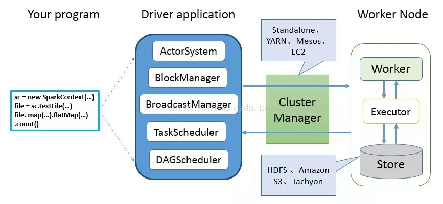
spark计算模型
RDD可以看做是对各种数据计算模型的统一抽象，Spark的计算过程主要是RDD的迭代计算过程。RDD的迭代计算过程非常类似于管道。分区数量取决于partition数量的设定，每个分区的数据只会在一个Task中计算。所有分区可以在多个机器节点的Executor上并行执行。
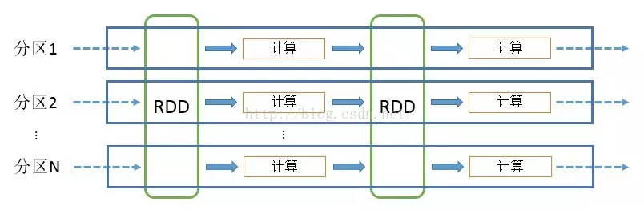
集群架构设计
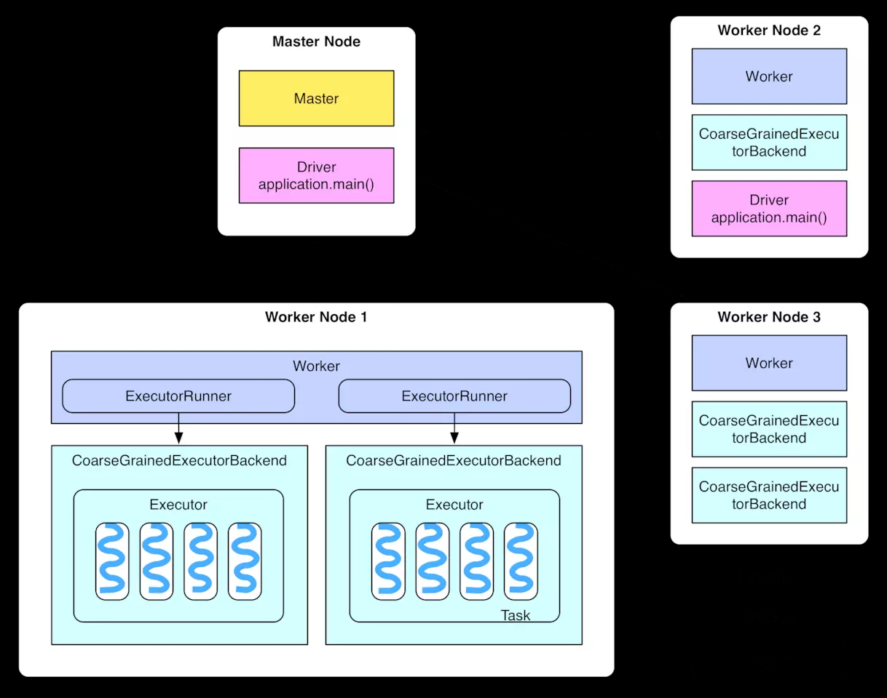
整个集群分为 Master 节点和Worker 节点，相当于 Hadoop 的 Master 和 Slave 节点。 Master 节点上常驻 Master 守护进程，负责管理全部的 Worker 节点。 Worker 节点上常驻 Worker 守护进程，负责与 Master 节点通信并管理 executors。 Driver 官方解释是 “The process running the main() function of the application and creating the SparkContext”。Application 就是用户自己写的 Spark 程序（driver program)。
spark 运行流程与特点
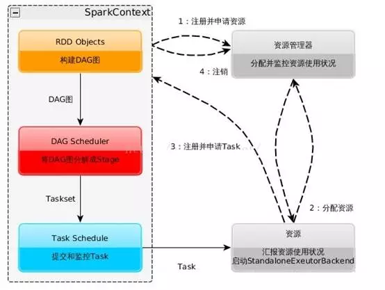
- 构建Spark Application的运行环境，启动SparkContext
- SparkContext向资源管理器（可以是Standalone，Mesos，Yarn）申请运行Executor资源，并启动StandaloneExecutorbackend
- Executor向SparkContext申请Task
- SparkContext将应用程序分发给Executor
- SparkContext构建成DAG图，将DAG图分解成Stage、将Taskset发送给Task Scheduler，最后由Task Scheduler将Task发送给Executor运行
- Task在Executor上运行，运行完释放所有资源
特点：
- 每个Application获取专属的executor进程，该进程在Application期间一直驻留，并以多线程方式运行Task。这种Application隔离机制是有优势的，无论是从调度角度看（每个Driver调度他自己的任务），还是从运行角度看（来自不同Application的Task运行在不同JVM中），当然这样意味着Spark Application不能跨应用程序共享数据，除非将数据写入外部存储系统
- Spark与资源管理器无关，只要能够获取executor进程，并能保持相互通信就可以了
- 提交SparkContext的Client应该靠近Worker节点（运行Executor的节点），最好是在同一个Rack里，因为Spark Application运行过程中SparkContext和Executor之间有大量的信息交换
- Task采用了数据本地性和推测执行的优化机制
RDD特性及运行流程
RDD特性
- 高效的容错性，根据DAG图恢复分区，数据复制或者记录日志
- RDD血缘关系、重新计算丢失分区、无需回滚系统、重算过程在不同节点之间并行、只记录粗粒度的操作
- 中间结果持久化到内存，数据在内存中的多个RDD操作之间进行传递，避免了不必要的读写磁盘开销
存放的数据可以是Java对象，避免了不必要的对象序列化和反序列化
RDD在Spark中运行大概分为以下三步：
创建RDD对象
DAGScheduler模块介入运算，计算RDD之间的依赖关系，RDD之间的依赖关系就形成了DAG
每一个Job被分为多个Stage。划分Stage的一个主要依据是当前计算因子的输入是否是确定的，如果是则将其分在同一个Stage，避免多个Stage之间的消息传递开销
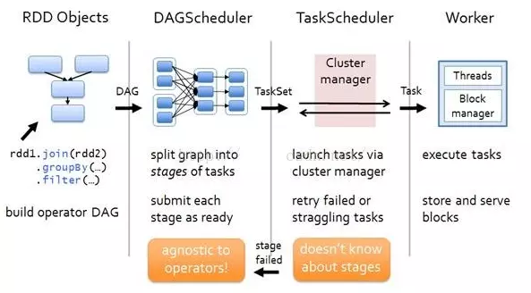
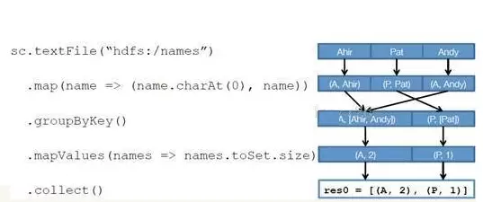
创建 RDD 上面的例子除去最后一个 collect 是个动作，不会创建 RDD 之外，前面四个转换都会创建出新的 RDD 。因此第一步就是创建好所有 RDD( 内部的五项信息 )？创建执行计划 Spark 会尽可能地管道化，并基于是否要重新组织数据来划分阶段 (stage) ，例如本例中的 groupBy() 转换就会将整个执行计划划分成两阶段执行。最终会产生一个 DAG(directed acyclic graph ，有向无环图 ) 作为逻辑执行计划
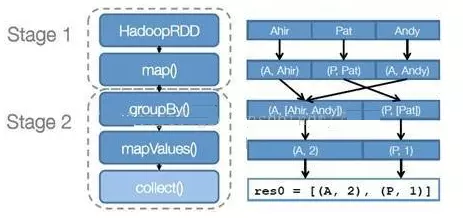
调度任务 将各阶段划分成不同的 任务 (task) ，每个任务都是数据和计算的合体。在进行下一阶段前，当前阶段的所有任务都要执行完成。因为下一阶段的第一个转换一定是重新组织数据的，所以必须等当前阶段所有结果数据都计算出来了才能继续
spark运行模式
standalone: 独立集群运行模式
- Standalone模式使用Spark自带的资源调度框架
- 采用Master/Slaves的典型架构，选用
ZooKeeper来实现Master的HA
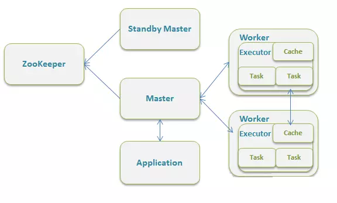
yarn
Spark on YARN模式根据Driver在集群中的位置分为两种模式：一种是YARN-Client模式，另一种是YARN-Cluster（或称为YARN-Standalone模式）
Yarn-Client模式中，Driver在客户端本地运行，这种模式可以使得Spark Application和客户端进行交互，因为Driver在客户端，所以可以通过webUI访问Driver的状态，默认是http://hadoop1:4040访问，而YARN通过http:// hadoop1:8088访问
- YARN-client的工作流程步骤为：
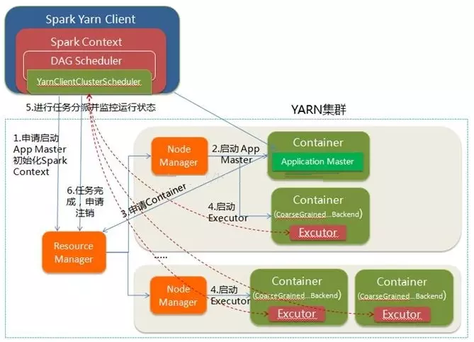
- Spark Yarn Client向YARN的ResourceManager申请启动Application Master。同时在SparkContent初始化中将创建DAGScheduler和TASKScheduler等，由于我们选择的是Yarn-Client模式，程序会选择YarnClientClusterScheduler和YarnClientSchedulerBackend
- ResourceManager收到请求后，在集群中选择一个NodeManager，为该应用程序分配第一个Container，要求它在这个Container中启动应用程序的ApplicationMaster，与YARN-Cluster区别的是在该ApplicationMaster不运行SparkContext，只与SparkContext进行联系进行资源的分派
- Client中的SparkContext初始化完毕后，与ApplicationMaster建立通讯，向ResourceManager注册，根据任务信息向ResourceManager申请资源（Container）
- 一旦ApplicationMaster申请到资源（也就是Container）后，便与对应的NodeManager通信，要求它在获得的Container中启动CoarseGrainedExecutorBackend，CoarseGrainedExecutorBackend启动后会向Client中的SparkContext注册并申请Task
- client中的SparkContext分配Task给CoarseGrainedExecutorBackend执行，CoarseGrainedExecutorBackend运行Task并向Driver汇报运行的状态和进度，以让Client随时掌握各个任务的运行状态，从而可以在任务失败时重新启动任务
- 应用程序运行完成后，Client的SparkContext向ResourceManager申请注销并关闭自己
Spark Cluster模式:
- 在YARN-Cluster模式中，当用户向YARN中提交一个应用程序后，YARN将分两个阶段运行该应用程序：
- 第一个阶段是把Spark的Driver作为一个ApplicationMaster在YARN集群中先启动；
- 第二个阶段是由ApplicationMaster创建应用程序，然后为它向ResourceManager申请资源，并启动Executor来运行Task，同时监控它的整个运行过程，直到运行完成
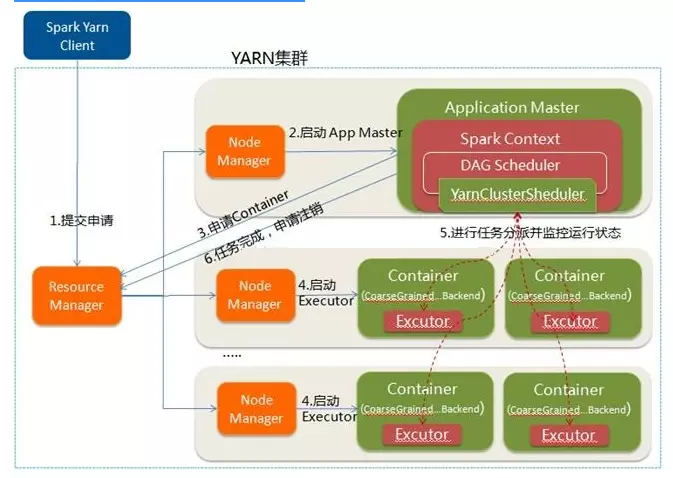
- Spark Yarn Client向YARN中提交应用程序，包括ApplicationMaster程序、启动ApplicationMaster的命令、需要在Executor中运行的程序等
- ResourceManager收到请求后，在集群中选择一个NodeManager，为该应用程序分配第一个Container，要求它在这个Container中启动应用程序的ApplicationMaster，其中ApplicationMaster进行SparkContext等的初始化
- ApplicationMaster向ResourceManager注册，这样用户可以直接通过ResourceManage查看应用程序的运行状态，然后它将采用轮询的方式通过RPC协议为各个任务申请资源，并监控它们的运行状态直到运行结束
- 一旦ApplicationMaster申请到资源（也就是Container）后，便与对应的NodeManager通信，要求它在获得的Container中启动CoarseGrainedExecutorBackend，CoarseGrainedExecutorBackend启动后会向ApplicationMaster中的SparkContext注册并申请Task。这一点和Standalone模式一样，只不过SparkContext在Spark Application中初始化时，使用CoarseGrainedSchedulerBackend配合YarnClusterScheduler进行任务的调度，其中YarnClusterScheduler只是对TaskSchedulerImpl的一个简单包装，增加了对Executor的等待逻辑等
- ApplicationMaster中的SparkContext分配Task给CoarseGrainedExecutorBackend执行，CoarseGrainedExecutorBackend运行Task并向ApplicationMaster汇报运行的状态和进度，以让ApplicationMaster随时掌握各个任务的运行状态，从而可以在任务失败时重新启动任务
- 应用程序运行完成后，ApplicationMaster向ResourceManager申请注销并关闭自己
参考：